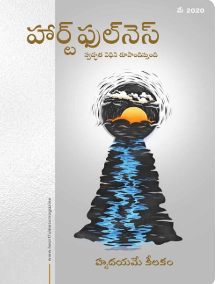

An Appeal from Daaji(10.May.2025)
Holy Tirthankars: In the Light of Heartfulness(10.May.2025)
Osaka Expo 2025, Japan(07.May.2025)
Music and Summer Retreat(04.May.2025)
Gitopadesh Vidyarthi Course for Children(30.Apr.2025)
Global Teens Meet(28.Apr.2025)
Preceptor Led Tent Activities(26.Apr.2025)
Summer Retreat(15.Apr.2025)
Celebrating the life of Babuji Maharaj(11.Apr.2025)
Special Wellness Offerings(09.Apr.2025)
Requests for Appointments with Daaji while (06.Apr.2025)
Support Heartfulness in transforming hearts (25.Mar.2025)
Self-Nomination for Preceptor Work SNP 3 (07.Mar.2025)
Learn Heartful Communication (05.Mar.2025)
Australia Day Award For Heartfulness Trainer (14.Feb.2025)
HFI Projects on Environment, Education & Medical(06.Feb.2025)
Sow Spiritual Seeds and Help Grow a Spiritual Forest(02.Feb.2025)
Sow Spiritual Seeds and Help Grow a Spiritual Forest(02.Feb.2025)
Heartfulness Startup Forum(24.Jan.2025)
Daaji's New Book: Holy Tirthankars: In the Light of Heartfulness(07.Jan.2025)
Harmony of Hearts(30.Dec.2023)
Heartful Communication(28.Dec.2023)
Gitopadesh Summit, Kanha Shanti Vanam(15.Dec.2023)
Tales from the Puranas and Itihaas(14.Nov.2023)
5-Day Retreats at Satkhol Himalayan Ashram(12.Nov.2023)
5-Day Retreats at Satkhol Himalayan Ashram(12.Nov.2023)
Introduction to WellnessByHeartfulness(9.Nov.2023)
A unique video series on YT and FB channels(9.Nov.2023)
Next Heartfulness Green Kanha Run(5.Oct.2023)
Voice that Cares(2.Oct.2023)
Releasing the Quest Series on Heartfulness Practices(30.Sep.2023)
Health Guidelines for September Bhandara(17.Sep.2023)
Welness Workshops at Kanha Shantivanam(8.Sep.2023)
Ekatm Abhiyan - Oneness Campaign(6.Sep.2023)
Medicine and Meditation conference at AIIMS(20.Aug.2023)
Daaji's Travel Diaries(17.Jun.2023)
Corporate Social Responsibility initiatives of Heartfulness(1.Jul.2023)
Collection of PAN and other data from donors to Heartfulness(19.Jun.2023)
The Passing of a Dear Brother(13.Apr.2023)
Message from Daaji about Baa(7.Mar.2023)
Every Heart Meditates, Every Day(16.Feb.2023)
Upcoming Celebrations 2023(15.Jan.2023)
An Invitation to Participate in Our Research Survey(15.Jan.2023)
Transmission

You are not alone
Attitude

Detox and Rejurenate

Demystifying Meditation
Prayer

Heartful Living

The Hearts Goodness

Finding Joy

Peace Revolution

Communicate with Heart

Expressing the Inexpressible

The Psychology of Peace

Trust Yourself

Taking Care

Back to Basics
Giving

Self Acceptance

How to feel well

Sustainable Peace

Celebrating Life
Healing
Yoga4Unity

Create a Light Footprint

Balance is Dynamic

Needs and Wants

The Art of Intention

A toolkit for change
Research

Health

Mental and Emotional Well-being
Peacefulness

Generation Connect
Friendship
Yoga

Celebrity Cultural Diversity

Taking Care of the Planet

Being Happy

Building Community

New Beginnings

Humor and Creativity

Self Care

Timeless Wisdom

Inspired Parenting

Communicate with Love

Encounters of the Heart
Reality

Spiritual Renaissance

Loving Nature

Simplicity is the New Reality

Creating Effective Habits

Celebrating Life

The Art of Gratitude
Community
Being your Authentic Self
From Emergency to Emergence
Sport
We are One
The Heart is the Key
The Art of Communication
Yogic Psychology
Transmission
You are not alone
Attitude
Detox and Rejurenate
Demystifying Meditation
Prayer
Heartful Living
The Hearts Goodness
Finding Joy
Peace Revolution
Communicate with Heart
Expressing the Inexpressible
The Psychology of Peace

Planet Love
Environment
Trust Yourself
Taking Care
Back to Basics
Giving
Self Acceptance
How to feel well
Sustainable Peace
Celebrating Life
Healing
Yoga4Unity
Create a Light Footprint
Balance is Dynamic
Needs and Wants
The Art of Intention
Research
Health
Mental and Emotional Well-being
Peacefulness
Generation Connect
Friendship
Celebrity Cultural Diversity
Taking Care of the Planet
Being Happy
Building Community
New Beginnings
Self Care
Timeless Wisdom
Inspired Parenting
Communicate with Love
Encounters of the Heart
Reality
Spiritual Renaissance
Loving Nature

Finding Balance
Simplicity is the New Reality
Creating Effective Habits
Celebrating Life

Become the best version of yourself

Love in action

Our Food Story
The Art of Gratitude
Community
Being your Authentic Self
From Emergency to Emergence
Sport
We are One
The Heart is the Key
The Art of Communication
Yogic Psychology
Food

18th Sustainable Development Goal
Sleep

Overcoming Prejudice

The Wisdom Bridge

The Power of Prayer

How to Live Simply
Consciousness
Emotions
Synchronicity

Gift Ecology

The Profound Beauty of Yoga

The Now of Happiness

Consciousness,SuperConsiousness and Samadhi

Being Creative

The Natural Polarity

International Day of Yoga

How to be Present

Digital Detox
Digital Detox
Potential
How can we become Visionaries

The Hope Paradox

What is Consciousness?

Destiny and Choice

Journey to the Center

Celebrating Peace Day
Education

Why We Value Freedom

Yoga-Connect,Integrate,Become One

Good Health
Rejuvenation

Celebrating Mindfulness

Life in Life

Resolve..To Meditate..To Achieve

The Relevance Day of Swami Vivekananda

Space,Time and Continuum

Celebrating World Teachers Day
Did you make someone else's day today?
Neuroplasticity

The Anatomy of Emotions

Their Survival

Evolution of Consciousness
Observation

Vibratory Compatability

Transmission-Infinite transformation

The Science of Happiness

Tuning the Soul

Learn to Relax

Volume 8 Issue 6 - November 2015
Volume 8 Issue 5 - September 2015
Volume 8 Issue 4 - July 2015
Special Issue - May 2015
Volume 8 Issue 3 - May 2015
Volume 8 Issue 2 - March 2015
Volume 8 Issue 1 - January 2015
Special Commemorative Issue - December 2014
Volume 7 Issue 6 - November 2014
Volume 7 Issue 5 - September 2014
Volume 7 Issue 4 - July 2014
Volume 7 Issue 3 - May 2014
Volume 7 Issue 2 - March 2014
Volume 7 Issue 1 - January 2014
Volume 6 Issue 6 (November 2013)
Volume 6 Issue 5 (September 2013)
Volume 6 Issue 4 (July 2013)
Volume 6 Issue 3 (May 2013)
Volume 6 Issue 2 (March 2013)
Volume 6 Issue 1 (January 2013)
Volume 5 Issue 6 (November 2012)
Volume 5 Issue 5 (September 2012)
Volume 5 Issue 4 (July 2012)
Volume 5 Issue 3 (May 2012)
Volume 5 Issue 2 (March 2012)
Volume 5 Issue 1 (January 2012)
Volume 4 Issue 6 (November 2011)
Volume 4 Issue 5 (September 2011)
Volume 4 Special Issue (August 2011)
Volume 4 Issue 4 (July 2011)
Volume 4 Issue 3 (May 2011)
Volume 4 Issue 2 (March 2011)
Volume 4 Issue 1 (January 2011)
Volume 3 Issue 6 (November 2010)
Volume 3 Issue 5 (September 2010)
Volume 3 Issue 4 (July 2010)
Volume 3 Issue 3 (May 2010)
Volume 3 Issue 2 (March 2010)
Volume 3 Issue 1 (January 2010)
Volume 2 Issue 6 (November 2009)
Volume 2 Issue 5 (September 2009)
Volume 2 Special Issue (August 2009)
Volume 2 Issue 4 (July 2009)
Volume 2 Issue 3 (May 2009)
Volume 2 Issue 2 (March 2009)
Volume 2 Issue 1 (January 2009)
Volume 1 Issue 6 (November 2008)
Volume 1 Issue 5 (September 2008)
Volume 1 Issue 4 (July 2008)
Volume 1 Issue 3 (May 2008)
Volume 1 Issue 2 (March 2008)
Volume 1 Issue 1 (January 2008)
Volume 8 Issue 6 - November 2015
Volume 8 Issue 5 - September 2015
Volume 8 Issue 4 - July 2015
Special Issue - May 2015
Volume 8 Issue 3 - May 2015
Volume 8 Issue 2 - March 2015
Volume 8 Issue 1 - January 2015
Special Commemorative Issue - December 2014
Volume 7 Issue 6 - November 2014
Volume 7 Issue 5 - September 2014
Volume 7 Issue 4 - July 2014
Volume 7 Issue 3 - May 2014
Volume 7 Issue 2 - March 2014
Volume 7 Issue 1 - January 2014
Volume 6 Issue 6 (November 2013)
Volume 6 Issue 5 (September 2013)
Volume 6 Issue 4 (July 2013)
Volume 6 Issue 3 (May 2013)
Volume 6 Issue 2 (March 2013)
Volume 6 Issue 1 (January 2013)
Volume 5 Issue 6 (November 2012)
Volume 5 Issue 5 (September 2012)
Volume 5 Issue 4 (July 2012)
Volume 5 Issue 3 (May 2012)
Volume 5 Issue 2 (March 2012)
Volume 5 Issue 1 (January 2012)
Volume 4 Issue 6 (November 2011)
Volume 4 Issue 5 (September 2011)
Volume 4 Special Issue (August 2011)
Volume 4 Issue 4 (July 2011)
Volume 4 Issue 3 (May 2011)
Volume 4 Issue 2 (March 2011)
Volume 4 Issue 1 (January 2011)
Volume 3 Issue 6 (November 2010)
Volume 3 Issue 5 (September 2010)
Volume 3 Issue 4 (July 2010)
Volume 3 Issue 3 (May 2010)
Volume 3 Issue 2 (March 2010)
Volume 3 Issue 1 (January 2010)
Volume 2 Issue 6 (November 2009)
Volume 2 Issue 5 (September 2009)
Volume 2 Special Issue (August 2009)
Volume 2 Issue 4 (July 2009)
Volume 2 Issue 3 (May 2009)
Volume 2 Issue 2 (March 2009)
Volume 2 Issue 1 (January 2009)
Volume 1 Issue 6 (November 2008)
Volume 1 Issue 5 (September 2008)
Volume 1 Issue 4 (July 2008)
Volume 1 Issue 3 (May 2008)
Volume 1 Issue 2 (March 2008)
Volume 1 Issue 1 (January 2008)
Echoes of the Far East, June 2015
Echoes of the Far East, February 2015
Echoes of the Far East, November 2014
Echoes of the Far East, April 2014
Echoes of the Far East, January 2014
Echoes of the Far East, November, 2013
Echoes of the Far East, July, 2013
Echoes of the Far East, April, 2013
Echoes of the Far East, August, 2012
Echoes of the Far East, March, 2012
Echoes of the Far East, September, 2011
Echoes of the Far East, June, 2011
Echoes of the Far East, January, 2011
Echoes of the Far East, September, 2010
Echoes of the Far East, June, 2010
Echoes of the Far East, March, 2010
Echoes of the Far East, December, 2009
Echoes of the Far East, September, 2009
Echoes of the Far East, June, 2009
Echoes of the Far East, April, 2009
Echoes of the Far East, February, 2009
Echoes of Africa - May 2014
Echoes of Africa - November 1, 2013
Echoes of Africa - March 31, 2013
Echoes of Africa - July 1, 2012
Echoes of Africa - January 28, 2012
Echoes of Africa - December 31, 2011
Echoes of Africa - November 30, 2011
Echoes of Africa - September 15, 2011
Echoes of Africa - August 15, 2011
Echoes of Africa - June 1, 2011
Echoes of Africa - May 1, 2011
Echoes of Africa - April 1, 2011
Echoes of Africa - March 1, 2011
Echoes of Africa - February 1, 2011
Echoes of Africa - January 1, 2011
Echoes of Africa - November 1, 2010
Echoes of Africa - October 1, 2010
Echoes of Africa - September 1, 2010
Echoes of Africa - August 1, 2010
Echoes of Africa - July 1, 2010
Echoes of Africa - June 1, 2010
Echoes of Africa - May 1, 2010
Echoes of Africa - April 1, 2010
Echoes of Africa - March 1, 2010
Echoes of Africa - February 15, 2010
Echoes of Africa - February 2, 2010
Echoes of Africa - January 1, 2010
Echoes of Africa - December 1, 2009
Echoes of Africa - November 1, 2009
Echoes of Africa - October 1, 2009
Echoes of Africa - September 1,2009
Echoes of Africa - August 1, 2009
Echoes of Africa - July 1, 2009
Echoes of Africa - June 1, 2009
Echoes of Africa - April-May 1, 2009
Echoes of Africa - March 1, 2009
Echoes of Africa - February 1, 2009
Echoes of Africa - January 1, 2009
Echoes of Africa - December 1, 2008
Echoes of Africa - November 1, 2008
Echoes of Africa - October 1, 2008
Echoes of Africa - September 1, 2008
Echoes of Africa - August 1, 2008
Echoes of Africa - July 1, 2008
Echoes of Africa - June 1, 2008
Echoes of Africa - May 1, 2008
Echoes of Africa - April 1, 2008
Echoes of Africa - March 1, 2008
Echoes of Africa - February 1, 2008
Echoes of Africa - January 1, 2008
Echoes of Africa - December 1, 2007
Echoes of Africa - November 1, 2007
Echoes of Africa - October 1, 2007
Echoes of Africa - September 1, 2007
Echoes of Africa - August 1, 2007
Echoes of Africa - July 1, 2007
Echoes of Africa - June 1, 2007
Echoes of Africa - May 1, 2007
Echoes of Africa - April 30, 2007
Echoes of Africa - April 1, 2007
Echoes of Africa - March 1, 2007
Echoes of Africa - February 1, 2007
Echoes of Africa - January 1, 2007
Echoes of Africa - December 1, 2006
Echoes of Africa - November 1, 2006
Echoes of Africa - October 1, 2006
Echoes of Africa - September 1, 2006
Echoes of Africa - August 1, 2006
Echoes of Africa - July 24, 2006
Echoes of Africa - July 1, 2006
Echoes of Oceania- June,2015
Echoes of Oceania- Apr,2015
Echoes of Oceania- December,2014
Echoes of Oceania- June,2014
Echoes of Oceania- March,2014
Echoes of Oceania- October,2013
Echoes of Oceania- July,2013
Echoes of Oceania- Apr,2013
Echoes of Oceania- Jan,2013
Echoes of Oceania- Oct,2012
Echoes of Oceania- July,2012
Echoes of Oceania- Apr,2012
Echoes of Oceania- Jan,2012
Echoes of Oceania- Oct,2011
Echoes of Oceania- Jul,2011
Echoes of Oceania- Apr,2011
Echoes of Oceania- Jan,2011
Echoes of Oceania- Nov,2010
Echoes of Oceania- Oct,2010
Echoes of Oceania- Jul,2010
Echoes of Oceania- May,2010
Echoes of Oceania- Apr,2010
Echoes of Oceania- Jan,2010
Echoes of Oceania- Oct,2009
Echoes of Oceania- Jul,2009
Echoes of Oceania- Apr,2009
Echoes of Oceania- Jan,2009
Echoes of Oceania- Oct,2008
Echoes of Oceania- Aug,2008
Echoes of Oceania- June,2008
Echoes of Oceania- Apr,2008
Echoes of Oceania- Feb,2008
Echoes of Oceania- Dec,2007
Echoes of Oceania- Oct,2007
Echoes of North America-Dec,2015
Echoes of North America- Nov,2015
Echoes of North America- June,2015
Echoes of North America- Mar,2015
Echoes of North America- Dec,2014
Echoes of North America- Oct,2014
Echoes of North America- June,2014
Echoes of North America- Apr,2014
Echoes of North America- Dec,2013
Echoes of North America- Oct,2013
Echoes of North America- Sep,2013
Echoes of North America- June,2013
Echoes of North America- Mar,2013
Echoes of North America- Dec,2012
Echoes of North America- Sep,2012
Echoes of North America- June,2012
Echoes of North America- Mar,2012
Echoes of North America- Dec,2011
Echoes of North America- Sep,2011
Echoes of North America- June,2011
Echoes of North America- Mar,2011
Echoes of North America- Dec,2010
Echoes of North America- Oct,2010
Echoes of North America- June,2010
Echoes of North America- Mar,2010
Echoes of North America- Dec,2009
Echoes of North America- Sep,2009
Echoes of North America- June,2009
Echoes of North America- Mar,2009
Echoes of North America- Dec,2008
Echoes of North America- Sep,2008
Echoes of Latin America- Apr,2015
Echoes of Latin America- Dec,2014
Echoes of Latin America- Sep,2014
Echoes of Latin America- June,2014
Echoes of Latin America- Mar,2014
Echoes of Latin America- Dec,2013
Echoes of Latin America- Sep,2013
Echoes of Latin America- June,2013
Echoes of Latin America- Mar,2013
Echoes of Latin America- Dec,2012
Echoes of Latin America- Sep,2012
Echoes of Latin America- July,2012
Echoes of Latin America- Mar,2012
Echoes of Latin America- Dec,2011
Echoes of Latin America- Sep,2011
Echoes of Latin America- June,2011
Echoes of Latin America- Dec,2010
Echoes of SriLanka- Mar,2015
Echoes of SriLanka- Sep,2014
Echoes of SriLanka- Mar,2014
Echoes of SriLanka- Sep,2013
Echoes of SriLanka- July,2013
Echoes of SriLanka- May,2013
Echoes of SriLanka- Mar,2013
Echoes of SriLanka- Jan,2013
Echoes of SriLanka- Nov,2012
Volume XII - Issue 3 - July, 2017
Volume XII - Issue 2 - April, 2017
Volume XII - Issue 1 - January, 2017
Volume XI - Issue 4 - October, 2016
Volume XI - Issue 3 - July, 2016
Volume XI - Issue 2 - Apr, 2016
Volume XI - Issue 1 - Jan, 2016
Volume X - Issue 4 - October, 2015
Volume X - Issue 3 - July, 2015
Volume X - Issue 2 - April, 2015
Volume X - Issue 1 - January, 2015
Volume IX - Issue 4 - October, 2014
Volume IX - Issue 3 - July, 2014
Volume IX - Issue 2 - Apr, 2014
Volume IX - Issue 1 - Jan, 2014
Volume VIII - Issue 4 - October, 2013
Volume VIII - Issue 3 - July, 2013
Volume VIII - Issue 2 - April, 2013
Volume VIII - Issue 1 - January, 2013
Volume VII - Issue 3 - October, 2012
Volume VII - Issue 2 - July, 2012
Volume VII - Issue 1 - April, 2012
Volume VI - Issue 4 - January, 2012
Volume VI - No. 3 - October, 2011
Volume VI - No. 2 - July, 2011
Volume VI - No. 1 - April, 2011
Volume V - No. 4 - January, 2011
Volume V - No. 3 - October, 2010
Volume V - No. 2 - July, 2010
Volume V - No. 1 - April, 2010
Volume IV - No.4 - January, 2010
Volume IV - No.3 - October, 2009
Volume IV - No.2 - July, 2009
Volume IV - No.1 - April, 2009
Volume III - No. 4 - January, 2009
Volume III - No. 3 - October, 2008
Volume III - No. 2 - July, 2008
Volume III - No. 1 - April, 2008
Volume II - No. 4 - December, 2007
Volume II - No. 3 - August, 2007
Volume II - No. 1 - February, 2007
Volume I - No. 4 - November, 2006
Volume I - No. 3 - July, 2006
Volume I - No. 2 - April, 2006
Volume I - No. 1 - February, 2006